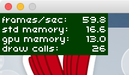
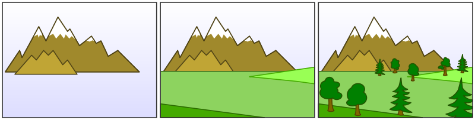
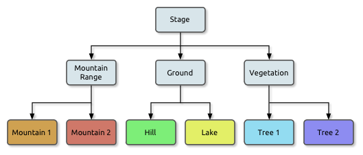
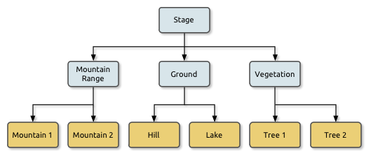
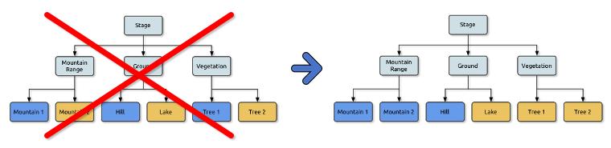

lime build android -release
Performance Optimization
While Starling mimics the classic display list of OpenFL, what it does behind the scenes is quite different. To achieve the best possible performance, you have to understand some key concepts of its architecture. Here is a list of best practices you can follow to have your game run as fast as possible.
General Haxe Tips
Always make a Release Build
The most important rule right at the beginning: always create a release build when you test performance. A release build can make a huge difference when you use a Stage3D framework like Starling. The speed difference is immense; depending on the platform you’re working on, you can easily get a multiple of the framerate of a debug build.
-
In Visual Studio Code, select a target without Debug in the name. For example, to create an Android release build, choose the Android or iOS targets instead of Android / Debug or iOS / Debug.
-
For command line builds, add the
-releaseflag to create a release build.
Check your Hardware
Be sure that Starling is indeed using the GPU for rendering.
That’s easy to check: if Starling.current.context.driverInfo contains the string Software, then Stage3D is in software fallback mode, otherwise it’s using the GPU.
Furthermore, some mobile devices can be run in a Battery Saving Mode. Be sure to turn that off when making performance tests.
Set the Framerate
Your framerate is somehow stuck at 24 frames per second, no matter how much you optimize? Then you probably never set your desired framerate, and you’ll see the OpenFL’s default setting.
To change that, either use the appropriate setting in your Lime project.xml configuration file, or manually set the framerate on the OpenFL stage.
<window fps="60"/>or
Starling.current.nativeStage.frameRate = 60;Avoid Allocations
Avoid creating a lot of temporary objects. They take up memory and need to be cleaned up by the garbage collector, which might cause small hiccups when it’s running.
// bad:
for (i in 0...10)
{
var point:Point = new Point(i, 2*i);
doSomethingWith(point);
}
// better:
var point:Point = new Point();
for (i in 0...10)
{
point.setTo(i, 2*i);
doSomethingWith(point);
}Actually, Starling contains a class that helps with that: Pool. It provides a pool of objects that are often required, like Point, Rectangle and Matrix. You can "borrow" objects from that pool and return them when you’re done.
// best:
var point:Point = Pool.getPoint();
for (i in 0...10)
{
point.setTo(i, 2*i);
doSomethingWith(point);
}
Pool.putPoint(point); // don't forget this!Starling Specific Tips
Minimize State Changes
As you know, Starling uses Stage3D to render the display list. This means that all drawing is done by the GPU.
Now, Starling could send one quad after the other to the GPU, drawing one by one. In fact, this is how the very first Starling release worked! For optimal performance, though, GPUs prefer to get a huge pile of data and draw all of it at once.
That’s why newer Starling versions batch as many quads together as possible before sending them to the GPU. However, it can only batch quads that have similar properties. Whenever a quad with a different "state" is encountered, a "state change" occurs, and the previously batched quads are drawn.
|
I use Quad and Image synonymously in this section. Remember, Image is just a subclass of Quad that adds a few methods. Besides, Quad extends Mesh, and what you read below is true for meshes, as well. |
These are the crucial properties that make up a state:
-
The texture (different subtextures from the same atlas are fine, though)
-
The blendMode of display objects
-
The textureSmoothing value of meshes/quads/images
-
The textureRepeat mode of meshes/quads/images
If you set up your scene in a way that creates as little state changes as possible, your rendering performance will profit immensely.
Again, Starling’s statistics display provides useful data. It shows exactly how many draw calls are executed per frame. The more state changes you have, the higher this number will be.

Figure 1. The statistics display includes the current number of draw calls.
|
The statistics display causes draw calls, as well. However, Starling explicitly decrements the draw count displayed to take that into account. |
Your target should always be to keep it as low as possible. The following tips will show you how.
The Painter’s Algorithm
To know how to minimize state changes, you need to know the order in which Starling processes your objects.
Like OpenFL, Starling uses the Painter’s algorithm to process the display list. This means that it draws your scene like a painter would do it: starting at the object at the bottom layer (e.g. the background image) and moving upwards, drawing new objects on top of previous ones.

Figure 2. Drawing a scene with the Painter’s algorithm.
If you’d set up such a scene in Starling, you could create three sprites: one containing the mountain range in the distance, one with the ground, and one with the vegetation. The mountain range would be at the bottom (index 0), the vegetation at the top (index 2). Each sprite would contain images that contain the actual objects.

Figure 3. The scene graph of the landscape from above.
On rendering, Starling would start at the left with "Mountain 1" and continue towards the right, until it reaches "Tree 2". If all those objects have a different state, this would mean six draw calls. That’s exactly what will happen if you load each object’s texture from a separate Bitmap.
The Texture Atlas
That’s one of the reasons why texture atlases are so important. If you load all those textures from one single atlas, Starling will be able to draw all objects at once! (At least if the other properties listed above do not change.)

Figure 4. The same scene graph, now using a single atlas texture.
The consequence of this is that you should always use an atlas for your textures. Here, each image uses the same atlas (depicted by all nodes having the same color).
Sometimes, though, not all of your textures will fit into a single atlas. The size of textures is limited, so you’ll run out of space sooner or later. But this is no problem, as long as you arrange your textures in a smart way.

Figure 5. The order of objects makes a difference.
Both those examples use two atlases (again, one color per atlas). But while the display list on the left will force a state change for each object, the version on the right will be able to draw all objects in just two batches.
Use the MeshBatch class
The fastest way to draw a huge number of quads or other meshes at once is to use the MeshBatch class. That’s the same class that is used internally by Starling for all rendering, so it’s heavily optimized. It works like this:
var meshBatch:MeshBatch = new MeshBatch();
var image:Image = new Image(texture);
for (i in 0...100)
{
meshBatch.addMesh(image);
image.x += 10;
}
addChild(meshBatch);Did you notice? You can add the same image as often as you want! Furthermore, adding it is a very fast operation; e.g. no event will be dispatched (which is the case when you add an object to a container).
As expected, this has some downsides, though:
-
All the objects you add must have the same state (i.e. use textures from the same atlas). The first image you add to the MeshBatch will decide on its state. You can’t change the state later, except by resetting it completely.
-
You can only add instances of the Mesh class or its subclasses (that includes Quad, Image, and even MeshBatch).
-
Object removal is quite tricky: you can only remove meshes by trimming the number of vertices and indices of the batch. However, you can overwrite meshes at a certain index.
For these reasons, it’s only suitable for very specific use-cases (the BitmapFont class, for example, uses a mesh batch internally). In those cases, it’s definitely the fastest option, though. You won’t find a more efficient way to render a huge number of objects in Starling.
| If you’re still using Starling 1.x, look for the QuadBatch class instead. |
Batch your TextFields
Per default, a TextField will require one draw call, even if your glyph texture is part of your main texture atlas. That’s because long texts require a lot of CPU time to batch; it’s faster to simply draw them right away (without copying them to a MeshBatch).
However, if your text field contains only a few letters (rule of thumb: below 16), you can enable the batchable property on the TextField.
With that enabled, your texts will be batched just like other display objects.
Use BlendMode.NONE
If you’ve got totally opaque, rectangular textures, help the GPU by disabling blending for those textures. This is especially useful for large background images.
backgroundImage.blendMode = BlendMode.NONE;Naturally, this will also mean an additional state change, so don’t overuse this technique. For small images, it’s probably not worth the effort (except if they’d cause a state change, anyway, for some other reason).
Use stage.color
Oftentimes, the actual stage color is actually never seen in your game, because there are always images or meshes on top of the stage.
In that case, always set it to clear black (0x0) or white (0xffffff).
There seems to be a fast hardware optimization path for a context.clear on some mobile hardware when it is called with either all 1’s or all 0’s.
Some developers reported a full millisecond of spared rendering time per frame, which is a very nice gain for such a simple change!
<window background="#000000"/>or
stage.color = 0x000000;On the other hand, if the background of your game is a flat color, you can make use of that, too: just set the stage color to that value instead of displaying an image or a colored quad. Starling has to clear the stage once per frame, anyway — thus, if you change the stage color, that operation won’t cost anything.
<window background="#ff2255"/>or
stage.color = 0xff2255;Avoid querying width and height
The width and height properties are more expensive than one would guess intuitively, especially on sprites.
A matrix has to be calculated, and each vertex of each child will be multiplied with that matrix.
For that reason, avoid accessing them repeatedly, e.g. in a loop. In some cases, it might even make sense to use a constant value instead.
// bad:
for (i in 0...numChildren)
{
var child:DisplayObject = getChildAt(i);
if (child.x > wall.width)
child.removeFromParent();
}
// better:
var wallWidth:Float = wall.width;
for (i in 0...numChildren)
{
var child:DisplayObject = getChildAt(i);
if (child.x > wallWidth)
child.removeFromParent();
}Make containers non-touchable
When you move the mouse/finger over the screen, Starling has to find out which object is hit. This can be an expensive operation, because it requires a hit-test on each and every display object (in the worst case).
Thus, it helps to make objects untouchable if you don’t care about them being touched, anyway. It’s best to disable touches on complete containers: that way, Starling won’t even have to iterate over their children.
// good:
for (i in 0...container.numChildren)
container.getChildAt(i).touchable = false;
// even better:
container.touchable = false;Hide objects that are outside the Stage bounds
Starling will send any object that is part of the display list to the GPU. This is true even for objects that are outside the stage bounds!
You might wonder: why doesn’t Starling simply ignore those invisible objects? The reason is that checking the visibility in a universal way is quite expensive. So expensive, in fact, that it’s faster to send objects up to the GPU and let it do to the clipping. The GPU is actually very efficient with that and will abort the whole rendering pipeline very early if the object is outside the screen bounds.
However, it still takes time to upload that data, and you can avoid that.
Within the high level game logic, it’s often easier to make visibility checks (you can e.g. just check the x/y coordinates against a constant).
If you’ve got lots of objects that are outside those bounds, it’s worth the effort.
Remove those elements from the stage or set their visible property to false.
Make use of Event Pooling
Compared to classic OpenFL, Starling adds an additional method for event dispatching:
// classic way:
object.dispatchEvent(new Event("type", bubbles));
// new way:
object.dispatchEventWith("type", bubbles);The new approach will dispatch an event object just like the first one, but behind the scenes, it will pool event objects for you. That means that you will save the garbage collector some work.
In other words, it’s less code to write and is faster — thus, it’s the preferred way to dispatch events.
(Except if you need to dispatch a custom subclass of Event; they cannot be dispatched with that method.)